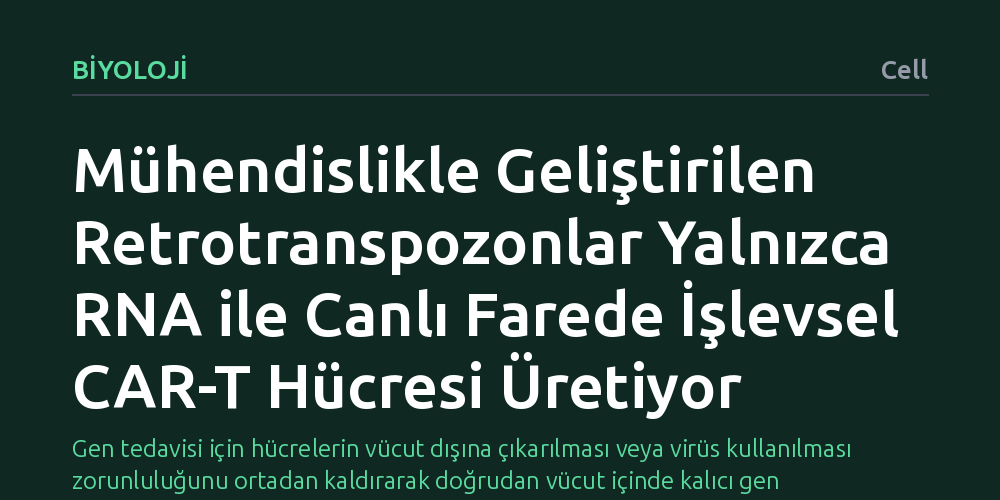

BIYOLOJI · Cell · 2026-10-23
Araştırmacılar, insan hücrelerine virüssüz kalıcı gen aktarımı yapabilmek amacıyla doğal retrotranspozonları bilgisayarlı yöntemlerle yeniden tasarladı. Geliştirilen 'Gen Yazıcı' sisteminin, yalnızca RNA kullanılarak canlı fare modellerinde işlevsel CAR-T bağışıklık hücreleri oluşturabildiği gösterildi.
Gen tedavisi için hücrelerin vücut dışına çıkarılması veya virüs kullanılması zorunluluğunu ortadan kaldırarak doğrudan vücut içinde kalıcı gen eklemenin yolunu açıyor.

Modern tıpta genetik hastalıkların ve kanserin tedavisinde en büyük vaatlerden biri, bozuk genleri düzeltmek veya bağışıklık hücrelerine yeni yetenekler kazandırmaktır. Günümüzde uygulanan CAR-T hücre tedavilerinde hastanın bağışıklık hücreleri vücut dışına alınır, laboratuvar ortamında çoğaltılır ve virüsler aracılığıyla yeni genetik kodlar eklenerek hastaya geri verilir. Ancak bu süreç hem aylar sürebilen maliyetli bir lojistik gerektirir hem de virüs kullanımına bağlı biyolojik riskler ve mutasyon tehlikeleri taşır.
Araştırmacıların önündeki temel soru, hücreleri vücut dışına çıkarmadan ve virüslere bağımlı kalmadan doğrudan canlı organizmanın içinde güvenli ve kalıcı gen aktarımının yapılıp yapılamayacağıydı. Yalnızca RNA molekülleri kullanılarak hedeflenen hücrelerin genetik koduna kalıcı olarak yeni talimatlar yazabilmek, gen terapisinde uzun süredir çözülemeyen en kritik mühendislik problemlerinden biri olarak duruyordu.
Bilim insanları bu sorunu çözmek için genomumuzda doğal olarak bulunan ancak çoğu zaman sessiz kalan 'retrotranspozon' adlı hareketli genetik öğelere odaklandı. Retrotranspozonlar, kendi RNA kopyalarını DNA'ya çevirerek genomun farklı bölgelerine yerleşebilen biyolojik kopyala-yapıştır mekanizmalarıdır. Araştırma ekibi, LTR (uzun terminal tekrar) dizisi içermeyen retrotranspozonları hesaplamalı biyoloji araçlarıyla yeniden kurgulayarak insan hücrelerinde çalışabilecek kararlı varyantlar modeledi.
Bilgisayarda tasarlanan bu yapılar, insan hücre kültürlerinde kapsamlı taramalardan geçirildi ve biyokimyasal olarak adım adım optimize edildi. 'Gen Yazıcıları' (Gene Writers) olarak adlandırılan bu yeni moleküler araçlar, dışarıdan viral kılıf veya yabancı DNA taşımaya gerek kalmadan, yalnızca sentetik RNA molekülleri şeklinde hücrelere iletildiğinde hedef bölgelere kalıcı gen entegrasyonu yapabilecek yeteneğe ulaştırıldı.
Kapsamlı optimizasyon sürecinin ardından araştırmacılar, geliştirdikleri Gen Yazıcı sistemini canlı bir hayvan modelinde sınadı. Bu aşamada insan bağışıklık sistemine sahip olacak şekilde genetik olarak uyarlanmış fareler (humanized mouse) kullanıldı. Sistemin bileşenleri, herhangi bir virüs vektörü olmaksızın, tamamen RNA molekülleri halinde doğrudan farelerin dolaşım sistemine verildi.
Elde edilen sonuçlar, Gen Yazıcı sisteminin canlı vücut içinde hedeflenen bağışıklık hücrelerine ulaşarak yabancı geni başarıyla ve kalıcı biçimde entegre ettiğini kanıtladı. Üretilen CAR-T hücrelerinin yalnızca genetik olarak değişmekle kalmadığı, aynı zamanda tümör hücrelerini tanıma ve hedefe yönelik bağışıklık yanıtı oluşturma bakımından işlevsel olduğu doğrulandı.
Bu çalışmanın ortaya koyduğu bulgular, gen tedavisini haftalar süren zahmetli laboratuvar prosedürlerinden kurtarıp doğrudan damardan verilebilecek basit bir RNA enjeksiyonuna dönüştürme fikrinin biyolojik olarak mümkün olduğunu gösteriyor. Virüs taşımayan 'tamamen RNA' temelli bir dağıtım stratejisi, üretim maliyetlerini düşürme ve hastaların tedaviye erişimini kolaylaştırma potansiyeline sahiptir.
Bununla birlikte, elde edilen başarı henüz bir klinik tedavi anlamına gelmemektedir. Deneylerin insanlarda değil fare modelinde yapılmış olması en önemli sınırlılıktır. Ayrıca retrotranspozon temelli sistemlerin genom genelinde amaçlanmayan bölgelere ekleme yapma (hedef dışı entegrasyon) riski ve vücudun bu yapay enzimlere karşı geliştirebileceği olası bağışıklık tepkileri, insan klinik denemelerine geçilmeden önce ayrıntılı şekilde araştırılmalıdır.